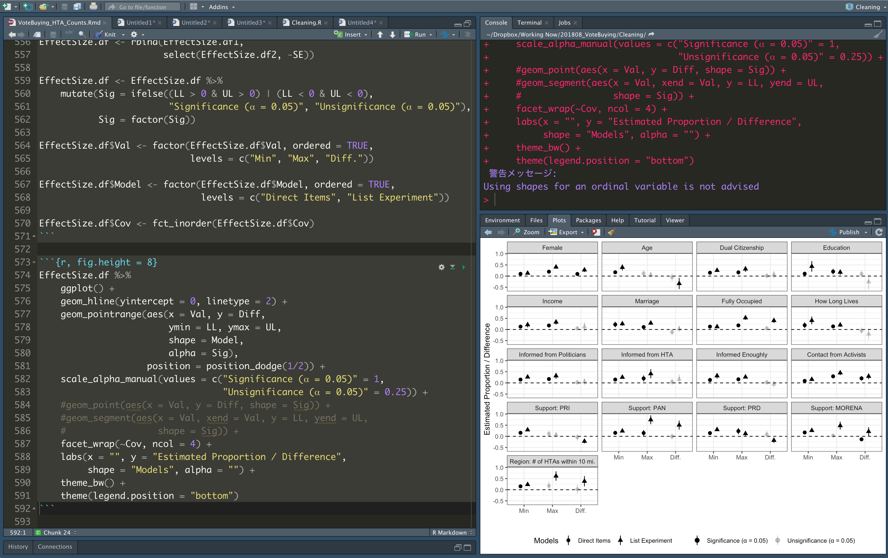

情報処理応用演習
第1回 Rの導入、基本的な操作、Quarto
関西大学総合情報学部
2023-10-07
ガイダンス
講義概要
- 講義日: 2023年10月7・14・28日の2〜4コース
- 10月28日は3〜4コース
- 場所: 1号館2階・情報処理室
- 講義内容: Rの使い方
- Rの基本的な操作 & Quarto
- データの入出力
- データのハンドリング（前処理）
- データの可視化
- 統計学、確率、多変量解析、因果推論の授業ではない。
- 後期の授業ではRの使い方について解説しない。
- 到達目標: Rを用いたデータ分析の教科書が読める土台づくり
講義内容（予定）
- 第1回（2023/10/07）
- RとRStudioの導入（JDCat分析ツールを利用）
- 基本的な操作
- Quartoの使い方
- 第2回（2023/10/14）
- データハンドリング（{dplyr}と{tidyr}）
- 第3回（2023/10/28）
- 可視化（{ggplot2}）
講師紹介

前提知識
教科書
宋財泫・矢内勇生.『私たちのR: ベストプラクティスの探求』Web-book
- 本講義内容を全てカバーする
- 無料 (https://www.jaysong.net/RBook)

参考書
- 松村優哉 他. 2021. 『改訂2版 RユーザのためのRStudio[実践]入門』技術評論社
- Garrett Grolemund and Hadley Wickham. 2017. R for Data Science. O’Reilly.
- 邦訳『Rではじめるデータサイエンス』(原著は無料: https://r4ds.had.co.nz/)
- Jared P. Lander. 2018. R for Everyone. Addison-Wesley Professional.
- 邦訳『みんなのR』


成績評価
- 平常点（30%）
- 課題（70%）
- 詳細は10月14日にアナウンス
授業内容のフィードバックについて
- メール: song@kansai-u.ac.jp
- 対面（授業前後）
Rの導入
Rとは

- 統計、データ分析、作図のためのインタープリタープログラミング言語
- 1976年開発されたS言語の後継者
- Ross IhakaとRobert Clifford Gentlemanが開発
- 統計分析のためのソフトウェアは星の数ほど存在
統計ソフトウェア/言語
有償
無償
Rのライバルたち（どれも無料）
Why R?
R界隈の神様、Hadley Wickham（羽鳥先生）によると… (Hadley 2019)
- 無料、オープンソース、多くのプラットフォームで利用可能
- オンライン、オフラインの両方で、多様なRコミュニティが存在
- 膨大なパッケージが用意されている。
- 分析結果を伝達する強力なツールを提供（R Markdown）
- 代表的な統合開発環境であるRStudioはデータサイエンス、対話型のデータ分析、そして統計的プログラミングが必要とするものに最適化されている。
- 多くの統計学や機械学習の研究者は自分の研究成果とRパッケージを同時に公開している。
- データ分析を特化した言語（欠損値、データフレーム、ベクトル化など）
- 関数型プログラミングのための最適な環境を提供
- RStudio社は営利企業であるものの、その収益の多くをオープンソースコミュニティーに投資している。
- メタプログラミングが非常に強力
- RはC、C++、Fortranのようなhigh-performance言語と容易に結合できるように設計されている。
GUIとCUI
- GUI：マウスでポチポチするだけで操作できる環境
- 間違いがほぼ起きない
- 柔軟性が低い（開発元が提供する機能しか使えない）
- 分析の再現が難しい（出来ないわけではない）
- CUI：全ての操作を文字列ベース（=キーボード）で行う
- 一文字でも間違えるとエラーが出たり
- 柔軟性が高い（カスタマイズ自由）
- 分析の再現性が非常に高い（コードさえ保存しておけばOK）
GUIとCUIの操作の違い
Data.csvを読み込み、Xという変数の平均値と分散を計算するまでの手順
統合開発環境（IDE）
- R Studioが代表的（ほぼ一択）
- 他にもR Tools for Visual Studio、VS Code、Atom、Sublime Text、Vim、Emacsなど
- IDEの使用は必須ではないが、生産性に大きく向上させる。
- データ分析、プログラミングの手助けをする優秀な秘書
- ファイルの管理、うろ覚えのコマンドの、コードの色分けなどを自動的に行う。
- コードの実行結果の画面をコードと同時に表示
- これまでの作業を記録

RとRStudioの導入
- 本講義のサポートページを参照しながら、宋と一緒にやってみよう。
導入 \(\neq\) 起動
Rの「導入」はアプリのインストールの概念に近い。一方、「起動」はアプリの実行である。スマホのアプリを使う度にインストールする人はいないだろう。Rの導入は1回のみとし、複数回行わないこと。何かの不具合が生じるわけではないが、サーバー立ち上げ用のURLにアクセスする度に、サーバーが増え、自分が使っていたサーバーが何だったのかが分からなくなる。今後の授業では「サーバー立ち上げ用のURL」でなく、「起動用のURL」からアクセスすること。
「プロジェクト」機能について
Rの基本的な操作
電卓としてのRと算術演算子
- Step 1: File > New File > R Script
- Step 2: Sourceペインの大きさを最大化する。
- Step 3: Sourceペインに以下のように入力する
- Step 4: Step 3で入力した行に移動し、「Cmd + Return（macOS）」または「Ctrl + Enter（Linux/Windows）」
- Consoleペインに以下のように出力されればOK
[1] 6Rの算術演算子
- 結果として何らかの数字が返される
- 累乗（
^）を除き、演算子の前後にはスペースを入れるのがRの流儀- 必須ではないが、コードが読みやすくなる
| 演算子 | 意味 | 例 | 結果 |
|---|---|---|---|
+ |
和 | 2 + 5 |
7 |
- |
差 | 2 - 8 |
-6 |
* |
積 | 7 * 3 |
21 |
/ |
商 | 16 / 5 |
3.2 |
^、** |
累乗（べき乗） | 2^3または2 ** 3 |
8 |
%% |
剰余 (モジュロ) | 18 %% 7 |
4 |
%/% |
整数商 | 18 %/% 7 |
2 |
Rの論理演算子
- 真（
TRUE）か偽（FALSE）の値を返す演算子
Rの論理演算子（まとめ）
- 「等しい」は
=でなく、==であることに注意すること=は代入演算子として機能する（他の言語と同じ）。
| 演算子 | 意味 | 例 | 結果 |
|---|---|---|---|
x < y |
xはyより小さい |
3 < 1 |
FALSE |
x <= y |
xはyと等しいか、小さい |
2 <= 2 |
TRUE |
x > y |
xはyより大きい |
6 > 5 |
TRUE |
x >= y |
xはyと等しいか、大きい |
4 >= 5 |
FALSE |
x == y |
xとyは等しい |
(2 + 3) == (4 + 1) |
TRUE |
x != y |
xとyは等しくない |
((2 * 3) + 1) != (2 * (3 + 1)) |
TRUE |
論理演算子: ANDとOR
AND演算子: &
&を挟む左右の両側がTRUEの場合のみTRUEを返す
[1] FALSE[1] TRUEOR演算子: |
|を挟む左右の片側、あるいは両側がTRUEの場合のみTRUEを返す
Rにおけるベクトル
ベクトル（vector）: Rにおけるデータの最小単位
- 同じデータ型（数値、文字列など）
- 数値と文字列が混在するベクトルは作成不可
- 長さは1以上
1や"Cat"は長さ1のベクトル
c()関数で作成()の中にベクトルの要素を入力- 長さ1のベクトルの場合、
c()は省略可能
ベクトルの作成
<-演算子で格納ベクトル名という名前のオブジェクト（object）が生成され、作業環境内に保存される。- 「作業環境」や「オブジェクト」の概念は次回解説
- 格納済みのオブジェクトのリストはコンソール上で
ls()または、RStudioの「Environment」タブで確認
- 格納しない場合、作業環境に保存されず、出力のみ
例1: 要素が1, 2, 3, 4, 5の長さ5の数値型ベクトル
- ベクトルを
my_vector1という名前で作業環境に格納
例2: 要素が”Cat”, “Lion”, “Tiger”の長さ3の文字型ベクトルをmy_vector2という名で格納
- 文字は必ず
"か'で囲む
オブジェクトの名前
基本的にオブジェクト名は何でも良いが、いくつかの禁則事項がある
- 特殊記号、スペース禁止（例外:
_と.）- スペースの代わりに
_か.が使われるが、_を推奨
- スペースの代わりに
- 数字、または
_、.で始まるオブジェクト名 - 予約語は使えない（
forやifなど）- 使える予約語もあるが、非推奨
- 日本語、ハングル、簡体字、アラビア文字も可能であるが、非推奨
良いオブジェクト名は
- オブジェクト名を見るだけで、中身の内容が想像できる
- 短いオブジェクト名
オブジェクトの出力
- オブジェクト名のみ入力
print(オブジェクト名)
[1] 1 2 3 4 5[1] "Cat" "Lion" "Tiger"- Rを再起動すると作業環境が初期化されるため、もう一回作成する必要がある。
- コードを記録し、残すことが重要
参考）等差数列ベクトルの作り方
公差 = 1の等差数列
:演算子を利用
ベクトル同士の演算
例) ベクトルXとベクトルY同士の演算
- ケース1：
Xの長さ =Yの長さ - ケース2：
Xの長さ \(\neq\)Yの長さ
参考) ベクトルの長さの求め方
length()関数を使用
ケース1: ベクトルの長さが同じ場合
- 同じ位置の要素同士の演算
| ベクトル/位置 | 1番目 | 2番目 | 3番目 | 4番目 | 5番目 | 6番目 |
|---|---|---|---|---|---|---|
my_vec1 |
1 | 2 | 3 | 4 | 5 | 6 |
| \(\times\) | \(\times\) | \(\times\) | \(\times\) | \(\times\) | \(\times\) | |
my_vec2 |
0 | 1 | 2 | 0 | 1 | 2 |
| 結果 | 0 | 2 | 6 | 0 | 5 | 12 |
ケース2: ベクトルの長さが異なる場合
- 短い方のベクトルがリサイクルされる（ベクトル・リサイクル）。
my_vec4の方が短いため、足りない分（太字の部分）はリサイクルされる。
| ベクトル/位置 | 1番目 | 2番目 | 3番目 | 4番目 | 5番目 | 6番目 |
|---|---|---|---|---|---|---|
my_vec3 |
1 | 2 | 3 | 4 | 5 | 6 |
| \(\times\) | \(\times\) | \(\times\) | \(\times\) | \(\times\) | \(\times\) | |
my_vec4 |
0 | 1 | 0 | 1 | 0 | 1 |
| 結果 | 0 | 2 | 0 | 4 | 0 | 6 |
ベクトル要素の抽出
ベクトルから任意の要素を抽出する2つの方法
- 方法1: 抽出する要素の位置を指定する。
- 方法2: 論理演算子を利用する。
例) 11, 12, 13, …, 19, 20が格納されたmy_vec5
| 位置 | 1 | 2 | 3 | 4 | 5 | 6 | 7 | 8 | 9 | 10 |
|---|---|---|---|---|---|---|---|---|---|---|
my_vec5 |
11 | 12 | 13 | 14 | 15 | 16 | 17 | 18 | 19 | 20 |
- 他の言語と違い、位置の番号は0からでなく、1からスタートすることに注意
要素の抽出: 位置指定
ベクトル名[抽出する要素の位置]
例1) my_vec5の3番目の要素
例2) my_vec5の2, 3, 4, 5番目の要素
[]内に抽出する要素の位置を表すベクトルを指定pos_vec、c(2, 3, 4, 5)、seq(2, 5, by = 1)、2:5はすべて同じ意味
要素の抽出: 論理演算子の利用
- それぞれの要素に対し、抽出するか（
TRUE）しないか（FALSE）を指定 - 表形式データにおける行の抽出を自由自在に操るためには必須知識（第9回）
例1) my_vec5から1, 4, 7, 9, 10番目の要素を抽出
[]内にベクトルの長さ分のベクトルを更に入力する必要があるため、あまり使わない方法
# my_vec5[c(1, 4, 7, 9, 10)] と同じ結果
my_vec5[c(TRUE, FALSE, FALSE, TRUE, FALSE, FALSE, TRUE, FALSE, TRUE, TRUE)][1] 11 14 17 19 20例2) my_vec5から奇数のみ抽出（論理演算子の利用）
表形式データの読み込み
{tidyverse}パッケージが提供するread_csv()関数を利用
オブジェクト名 <- read_csv("パスを含むファイル名")- 以下の例はプロジェクト・フォルダー内に
Dataという名の下位フォルダーがあり、その中にPref_Vote.csvが保存されている場合。- パスは
"Data/Pref_Vote.csv" - 予めデータをJDCat分析ツールのサーバーにアップロードしておくこと。
- ファイルアップロードの方法はサポートページの「Rの使い方 > ファイル管理」を参照
- パスは
注意：read_csv()とread.csv()は区別しよう。
両方.csv形式データを読み込む関数であるが、read.csv()はR内蔵関数、read_csv()は{tidyverse}を読み込まないと使用できない関数である。後者の方が見やすいメリットがある。本講義ではread_csv()のみを使用する。課題の際、read.csv()関数を使うと減点とする。
データの出力
オブジェクト名、またはprint(オブジェクト名)
# A tibble: 47 × 13
ID Pref Zaisei Over65 Under30 Jimin Minshin Komei Kyosan Ishin Shamin
<dbl> <chr> <dbl> <dbl> <dbl> <dbl> <dbl> <dbl> <dbl> <dbl> <dbl>
1 1 北海道 0.419 29.1 24.7 32.8 30.6 13.4 3.43 11.4 1.68
2 2 青森県 0.332 30.1 23.9 40.4 24.6 12.8 3.82 8.92 3.41
3 3 岩手県 0.341 30.4 24.5 34.9 22.4 8.61 5.16 11.2 5.29
4 4 宮城県 0.596 25.8 27.3 36.7 25.4 13.4 3.97 9.99 3.62
5 5 秋田県 0.299 33.8 21.4 43.5 22.7 11.2 5.17 7.56 5.12
6 6 山形県 0.342 30.8 24.8 42.5 21.5 11.8 4.3 7.6 5.2
7 7 福島県 0.509 28.7 25.2 33.8 28.3 11.0 3.43 10.4 3.24
8 8 茨城県 0.633 26.8 26.6 40.6 19.0 15.0 6.67 10.1 2.88
9 9 栃木県 0.622 25.9 26.8 38.8 21.6 12.4 10.9 7 2.05
10 10 群馬県 0.603 27.6 26.6 42.1 19.3 13.8 5.61 10 2.44
# ℹ 37 more rows
# ℹ 2 more variables: Region2 <dbl>, Region6 <dbl>データが全部見えない?
1行目
- 意味: 47行13列の表形式データ
# A tibble: 47 × 13最終行
- 意味: 表示された行以外にも更に37行があり、
Region2とRegion6は画面では省略されている。- 文字サイズが小さい or 画面が大きい場合は省略されず、13列がすべて出力される場合もある。
# … with 37 more rows, and 2 more variables: Region2 <dbl>, Region6 <dbl>読み込んだデータの出力
オブジェクト名、またはprint(オブジェクト名)
# A tibble: 47 × 13
ID Pref Zaisei Over65 Under30 Jimin Minshin Komei Kyosan Ishin Shamin
<dbl> <chr> <dbl> <dbl> <dbl> <dbl> <dbl> <dbl> <dbl> <dbl> <dbl>
1 1 北海道 0.419 29.1 24.7 32.8 30.6 13.4 3.43 11.4 1.68
2 2 青森県 0.332 30.1 23.9 40.4 24.6 12.8 3.82 8.92 3.41
3 3 岩手県 0.341 30.4 24.5 34.9 22.4 8.61 5.16 11.2 5.29
4 4 宮城県 0.596 25.8 27.3 36.7 25.4 13.4 3.97 9.99 3.62
5 5 秋田県 0.299 33.8 21.4 43.5 22.7 11.2 5.17 7.56 5.12
6 6 山形県 0.342 30.8 24.8 42.5 21.5 11.8 4.3 7.6 5.2
7 7 福島県 0.509 28.7 25.2 33.8 28.3 11.0 3.43 10.4 3.24
8 8 茨城県 0.633 26.8 26.6 40.6 19.0 15.0 6.67 10.1 2.88
9 9 栃木県 0.622 25.9 26.8 38.8 21.6 12.4 10.9 7 2.05
10 10 群馬県 0.603 27.6 26.6 42.1 19.3 13.8 5.61 10 2.44
# ℹ 37 more rows
# ℹ 2 more variables: Region2 <dbl>, Region6 <dbl>print(オブジェクト名, n = 行数)
# A tibble: 47 × 13
ID Pref Zaisei Over65 Under30 Jimin Minshin Komei Kyosan Ishin Shamin
<dbl> <chr> <dbl> <dbl> <dbl> <dbl> <dbl> <dbl> <dbl> <dbl> <dbl>
1 1 北海道 0.419 29.1 24.7 32.8 30.6 13.4 3.43 11.4 1.68
2 2 青森県 0.332 30.1 23.9 40.4 24.6 12.8 3.82 8.92 3.41
3 3 岩手県 0.341 30.4 24.5 34.9 22.4 8.61 5.16 11.2 5.29
4 4 宮城県 0.596 25.8 27.3 36.7 25.4 13.4 3.97 9.99 3.62
5 5 秋田県 0.299 33.8 21.4 43.5 22.7 11.2 5.17 7.56 5.12
6 6 山形県 0.342 30.8 24.8 42.5 21.5 11.8 4.3 7.6 5.2
7 7 福島県 0.509 28.7 25.2 33.8 28.3 11.0 3.43 10.4 3.24
8 8 茨城県 0.633 26.8 26.6 40.6 19.0 15.0 6.67 10.1 2.88
9 9 栃木県 0.622 25.9 26.8 38.8 21.6 12.4 10.9 7 2.05
10 10 群馬県 0.603 27.6 26.6 42.1 19.3 13.8 5.61 10 2.44
11 11 埼玉県 0.765 24.8 27.7 32.3 20.4 16 7.23 13.9 1.91
12 12 千葉県 0.777 25.9 26.7 37.8 21.7 14.0 5.46 11.3 2.01
13 13 東京都 1.00 22.7 27.4 34.4 19.8 11.4 7.34 14.2 2.82
14 14 神奈川県 0.917 23.9 27.8 34.9 21.5 12.2 7.77 12.5 2.79
15 15 新潟県 0.435 29.9 25.2 43.7 25.2 8.27 4.39 8 3.76
# ℹ 32 more rows
# ℹ 2 more variables: Region2 <dbl>, Region6 <dbl>tail(オブジェクト名)
# A tibble: 6 × 13
ID Pref Zaisei Over65 Under30 Jimin Minshin Komei Kyosan Ishin Shamin
<dbl> <chr> <dbl> <dbl> <dbl> <dbl> <dbl> <dbl> <dbl> <dbl> <dbl>
1 42 長崎県 0.316 29.6 25.8 41.7 20.7 16.9 5.12 6.27 3.48
2 43 熊本県 0.387 28.8 27.2 46.5 19.3 15.3 4.53 6.32 2.6
3 44 大分県 0.358 30.4 25.6 39.4 18.4 13.3 4.42 6.85 13.0
4 45 宮崎県 0.320 29.5 26.3 40.1 14.5 17.1 5.74 7.27 6.81
5 46 鹿児島県 0.321 29.4 26.0 46.0 16.2 14.5 6.47 6.52 3.62
6 47 沖縄県 0.315 19.6 33.4 27.8 13.3 15.1 7.66 15.6 12.1
# ℹ 2 more variables: Region2 <dbl>, Region6 <dbl>tail(オブジェクト名, n = 行数)head()で使うと最初のn行の出力も可能
# A tibble: 10 × 13
ID Pref Zaisei Over65 Under30 Jimin Minshin Komei Kyosan Ishin Shamin
<dbl> <chr> <dbl> <dbl> <dbl> <dbl> <dbl> <dbl> <dbl> <dbl> <dbl>
1 38 愛媛県 0.412 30.6 24.8 43.6 19.3 14.8 6.77 6.97 2.4
2 39 高知県 0.245 32.8 23.6 37.0 17.0 15.8 3.93 17.4 2.91
3 40 福岡県 0.618 25.9 28.2 36.5 19.1 17.2 7.03 10.8 3.33
4 41 佐賀県 0.329 27.7 28.0 43.5 21.1 15.5 4.85 5.67 4.16
5 42 長崎県 0.316 29.6 25.8 41.7 20.7 16.9 5.12 6.27 3.48
6 43 熊本県 0.387 28.8 27.2 46.5 19.3 15.3 4.53 6.32 2.6
7 44 大分県 0.358 30.4 25.6 39.4 18.4 13.3 4.42 6.85 13.0
8 45 宮崎県 0.320 29.5 26.3 40.1 14.5 17.1 5.74 7.27 6.81
9 46 鹿児島県 0.321 29.4 26.0 46.0 16.2 14.5 6.47 6.52 3.62
10 47 沖縄県 0.315 19.6 33.4 27.8 13.3 15.1 7.66 15.6 12.1
# ℹ 2 more variables: Region2 <dbl>, Region6 <dbl>.csv以外の表形式データ
.csv形式ファイルは表形式データの定番であり、標準
- 他にも様々な形式のデータがあり、Rで読み込み可能（以下は一部の例）
| ソフトウェア名 | 拡張子 | 使用パッケージ | 関数 |
|---|---|---|---|
| Microsoft Excel | .xls、.xlsx |
{readxl} | read_excle() |
| LibreOffice / OpenOffice | .ods |
{readODS} | read_ods() |
| SPSS | .sav |
{haven} | read_stata() |
| Stata | .dta |
{haven} | read_spss() |
| SAS | .sas7bdat |
{haven} | read_sas() |
Quarto
R Markdown / Quartoとは

- R + Markdown
- Rのコードと結果、文章が一つの文書としてまとまったもの
- HTML、Microsoft Word（
.docx）、PDF等
- HTML、Microsoft Word（
- スライド、ホームページ、ポスター、書籍なども作成可能

- 読み方は「クゥオート」（クワトロじゃない）
- 断片化されつつあるR Markdown生態系を一つに統合したもの
- R Markdownだとホームページには{blogdown}、書籍執筆は{bookdown}、スライド作成は{xaringan}など
- 本講義のスライド、サポートページ、教科書、宋のホームページも全てQuartoで作成
- R Markdownと使い方はほぼ同じ
- 本講義ではQuartoを使用
- Python/Julia/Observable JSも使用可能
プレーンテキストとリッチテキスト
- Plain text: 書式情報などが含まれていない純粋なテキストのみで構成されている文書
- macOSの「テキストエディット」、Windowsの「メモ帳」など
- Rich text: 書式情報だけでなく、図表なども含まれる文書
- Microsoft Word、Apple Pagesなど
- 書式情報の例: 文書の余白、行間の幅、文字サイズ、太さ、色
- リッチテキストには文字情報以外にも様々な書式情報が含まれているため、サイズが大きく、パソコンへの負担も大きい
プレーンからリッチへ
- Markup言語：プレーンテキストをリッチテキストへ変換するための言語
- HTML（HyperText Markup Language）が代表的
- 例1）
<b>と</b>で囲まれた文字は太字として出力される。 - 例2）
<a>と</a>で囲まれた文字はリンクであり、<a>のhref引数で指定されたリンク先へ飛ばされる。
- 例1）
Input:
Output:
この文字は太字にしましょう。
この文字はリンクにしましょう。
Markdownとは
- Markdown（）: Markup言語の軽量版
- 文章作成に必要なタグ（tag）をより簡単に記述できる。
- ブラインドタッチに慣れればWordよりも素早く文書を作成することができるようになる。
以下の2つのコードは同じ結果を返す。
Markupの場合（HTML）
Markdownの場合
結果
この文字は太字にしましょう。
この文字はリンクにしましょう。
Markup vs. Markdown
表の作成
Markup
Markdown
綺麗に揃えなくてもOK
Output
| ID | Name |
|---|---|
| 1 | Song |
| 2 | Hata |
Markup vs. Markdown
箇条書き
.qmdファイルの生成
- RStudioを起動し、プロジェクトを作成する。
- File > New > Quarto Document…を選択する。
- OKをクリックする。
- YAMLヘッダーを修正する。
- ファイルを保存する（File > Save）。
- ショートカットキー: ⌘+S（macOS）、または Ctrl + S (Windows)
- Sourceペイン上段のRenderをクリックする。
YAMLヘッダー
.qmdファイル最上段に位置する文書の情報に関する内容
- 最初は
titleとformatのみになっているため、適宜修正（場合によってはtitleのみになっている）
title: 文書のタイトルsubtitle:でサブタイトルも付けられる。
author: 文書の作成者date: 日付（「年/月/日」形式で入力）date: todayに修正すると、Renderした日の日付が自動的につけられる。
format: 出力形式（htmlのままで良い）lang: 出力言語（デフォルトはen）
Markdownの文法: 文章の改行
1回のみの改行は連続した文字列として認識するため、文章を改行するためには、必ず2回改行が必要
Markdownの文法: 強調
- 英語の強調はイタリック、日本語の強調は太字を使用
Input
文章の一部を**太字**にしてみましょう。
The G7 consists of Canada, France, Germany, Italy, *Japan*, UK, and USA.
~~取り消し線~~はあまり使わないかも。
<u>アンダーライン</u>はHTMLタグを使います。Output
文章の一部を太字にしてみましょう。
The G7 consists of Canada, France, Germany, Italy, Japan, UK, and USA.
取り消し線はあまり使わないかも。
アンダーラインはHTMLタグを使います。
Markdownの文法: リンク
[リンク文](URL)[]で囲まれた文章をクリックすると()内で指定したURLへ移動
Input
Output
ここをクリックすると、宋のHPへ移動します。
Markdownの文法: 見出し
#+ 半角スペース + 見出し（#が多いほど小さくなる）
Input
Output
見出し1 (ヘッディング1)
見出し2 (ヘッディング2)
見出し3 (ヘッディング3)
見出し4 (ヘッディング4)
Markdownの文法: 水平線
- 任意の行に
---を挿入 - 章と章の区切り、節と節の区切りなどに使用
Input
Output
文章1
文章2
Markdownの文法: 箇条書き（順序なし）
*+ 半角スペース + 文字列- 階層構造にする場合、
*の前に半角スペースを3個以上入れる *の代わりに-も可
Markdownの文法: 箇条書き（順序付き）
1.+ 半角スペース + 文字列1.の箇所は任意の数字でもOK。1.、2.、…も可- 階層構造にする場合、
1.の前に半角スペースを3個入れる 1.と*の組み合わせも可能
Markdownの文法: 数式
- 文中数式は
$数式$、独立した行の数式は$$で囲む - \(\LaTeX\) の数式表記法を理解する必要がある
Input
文中の数式の例: $e = mc^2$
独立した数式の例は、
$$
y_i \sim \text{Normal}(\mathbf{X} \boldsymbol{\beta}, \sigma).
$$
のように書きます。Output
文中の数式の例: \(e = mc^2\)
独立した数式の例は、
\[ y_i \sim \text{Normal}(\mathbf{X} \boldsymbol{\beta}, \sigma). \]
のように書きます。
Markdownの文法: 表
- 行は改行で、列は
|で区切る - 1行目は表のヘッダーであり、
|---|で区切る（-は1個以上でOK）|---|と|:---|は左揃え、|---:|は右揃え、|:---:|は中央揃え
Input
Output
| ID | Name | Birth (Year) | Pref |
|---|---|---|---|
| 1 | Ogura | 1852 | Tokyo |
| 2 | Tsurumi | 1858 | Tochigi |
| 3 | Yoshida | 1858 | Fukuoka |
| 4 | Hotta | 1859 | Chiba |
| 5 | Inoue | 1847 | Nagano |
| 6 | Tezuka | 1862 | Tokyo |
| 7 | Shikata | 1857 | Saitama |
| 8 | Nomura | 1855 | Gunma |
Markdownの文法: コメント
出力に影響されないコメントを入れる場合
<!--と-->内に囲む<!--と-->の間の文章は出力されない- 自分用のメモ、とりあえず出力させない内容などに使用
- チャンク内コメントは
#（チャンクは後に解説）
Markdownの文法: その他
教科書の「R Markdown入門」と「Quarto入門」を参照
- 図の挿入
- 脚注
- 引用
- Quarto独自の機能など
Rコードの挿入：チャンク（Chunk）
Rのコードを挿入する領域
```{r}と```で囲む。- チャンクの外にコードを書いても文章として認識する。
- チャンク内においてMarkdown文法は通用しない。純粋なRコードのみ。
`は「バッククォート（back quote）」と読む。- チャンクの前後は必ず改行する（下のコードの4・9行目のように）。
- コードの出力 > 結果の出力の順番
Rコードの挿入：チャンクのオプション
チャンク内に各チャンクのオプションが指定可能
チャンクオプションの付け方
```{r}
#| label: my_chunk_1
#| warning: false
#| echo: false
#| fig-width: 8
#| fig-align: center
Rのコード
```- 他にも数十のオプションの指定が可能
#| label: チャンクの名前- チャンクに名前を付ける
#| eval: false- コードのみ出力し、結果は出力しない
#| echo: false- 結果のみ出力し、コードは出力しない
#| fig-width: 5- 出力される図の幅を8インチに
#| fig-height: 500px- 出力される図の幅を高さを500ピクセルに
#| fig-align: center- 出力される図を中央揃えに
#| warning: false- 警告メッセージを隠す
#| error: true- エラーが発生してもとりあえずRenderする
Rコード: インラインコード
文章内にRコードの結果を埋め込む場合
`rと`の間にコードを挿入- 単に
`で囲まれたものはコードのように表示してくれるものの、そのコードは実行されない。文中に短いコードのみを入れたり、変数名、関数名を示す際に使う機能である。
再現・再生可能な研究
国里 (2020)による定義
- 学会、分野によっては正反対の概念になる場合もある (Barba 2018)
再生可能性 (Reproducibility)
- 同じデータ + 同じ方法 = 同じ結果
- Quarto/R Markdownの主な目的は再生可能性
再現可能性 (Replicability)
- 新しいデータ + 同じ方法 = 同じ結果
- 新しいデータ + 違う方法 = 同じ結果
Quarto/R Markdownと再生可能性
- 具体的にどのような手順で分析が行われたかが分かる
- コードを記録&公開
- コードに対する説明が付いている
- 自分が書いたコードであっても、昔書いたコードは読みにくい
- 過去、自分が行った分析の再生する出来ない場合も
- 今、教壇に立っている人の話ではない
- コードと結果が同時に照会できる
- わざわざRを立ち上げなくても、その場で分析の手順が分かる
再生可能な研究を目指して
- 可能な限り、詳細な説明を付ける
- 文章領域では「以下のコードがどのような目的で書かれたコードであるか」などを明示する。
- チャンク内にもこまめにコメント（
#）を付ける- 理想としては一行ごとにコメントを付ける
悪い例 (悪くはないが、良くもない)
良い例
再生可能な研究を目指して
- コードを分かりやすく書く
- 長いオブジェクト名を避ける
- 分かりやすいオブジェクト名
- 適宜スペースと字下げを入れるなど
- 読みやすいコードの書き方（前回講義を参照）
- データについても詳細に書く
- どのように収集されたデータであるのか
- どのような変数があるのか